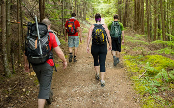

2,802 Miles of Trail to be Improved on International Trails Day
On June 2, 2018, people across the worldwill come together to collectively improve 2,802 miles of trail—the distance across the world—during International Trails Day. Muncak invites hikers, cyclists,…
Read More